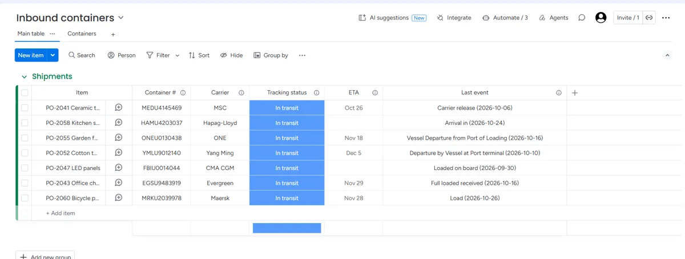
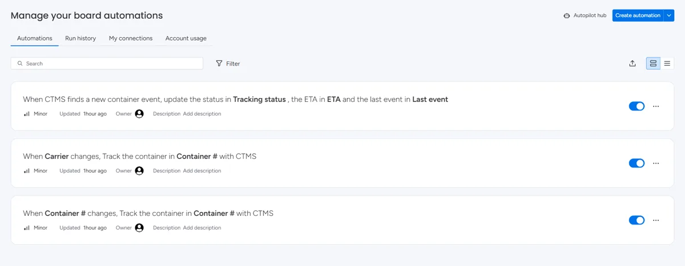
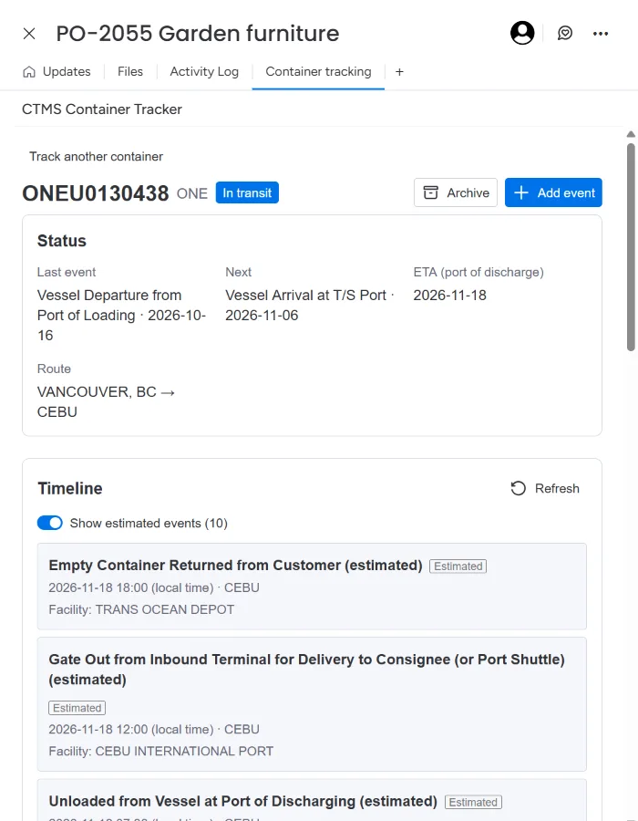
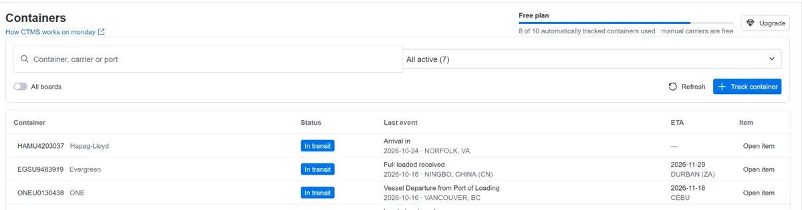

Getting Started with CTMS Container Tracker for monday.com
CTMS Container Tracker follows your ocean containers on your monday.com boards. Type a container number in an item, and CTMS checks the shipping line for events and keeps the item's status and arrival date (ETA) up to date. You don't need carrier accounts or any refreshing.
1. Install the app
- Open CTMS Container Tracker in the monday marketplace and click Install. An account admin may need to approve it.
- Confirm the access screen. CTMS reads and writes the items of the boards where you use it; it doesn't need your users, files or other boards.
- You start on the Free plan. No settings are needed.
2. Start from the template (fastest)
The Container tracking template creates a workspace with a ready board: the columns, both automations, the Containers view, the item tab and a short "How to use" doc.
- Add the Container tracking template from the template center (or from the app's marketplace page).
- Open the Container tracking board and type a container number in Container #: 4 letters and 7 digits, as printed on the container door. Spaces and dashes are fine.
- Within a minute Tracking status shows Waiting for first update (or the current status if CTMS already knows the container), then In transit once the carrier reports events. ETA fills in as soon as the carrier publishes one.
That's all. CTMS checks the carrier again on its own and updates the item when something changes.

3. Use your own board
- Add three columns if the board doesn't have them: a text column for the container number (e.g. "Container #"), a status column (e.g. "Tracking status") and a date column (e.g. "ETA"). A text column for the carrier is optional (see Which carrier?).
- Open Automate (top right of the board), search for CTMS and add Track the container when its number changes. Pick your container number column twice: once as the column that changes, once as the column CTMS reads.
- Add Update status and ETA when CTMS finds a new event and pick your status and ETA columns. Without this one, CTMS tracks the containers but your columns stay empty.
- Check the result under Automate:

- Optionally add the views: on the board, + (Add view) → Explore more views → Installed Apps → Containers; on an item, + → Explore more views → Installed Apps → Container tracking.
4. What CTMS writes to your board
| Column | Value |
|---|---|
| Tracking status | Waiting for first update: just added, no events from the carrier yet. Booked: only planned events so far. In transit: the carrier reports events. Journey complete: the journey is finished and the carrier is no longer checked. Missing labels are added to your status column the first time they are needed. |
| ETA | The estimated arrival at the port of discharge, as the carrier publishes it. |
- CTMS only writes when something visible changes. Each update uses one of your monday automation actions.
- CTMS never clears a column. If the carrier withdraws an ETA, the last one stays.
- Changing the number in an item starts tracking the new number for that item. Clearing the number, or deleting the item, stops the updates for that item.
- Renaming the columns is fine. If you delete or replace one, open the automation and pick the new column.
5. The item's Container tracking tab
Open an item and choose the Container tracking tab (add it once per board, see step 3). It shows:
- Status: last and next event, ETA at the port of discharge and the route.
- Timeline: every event from the carrier with date, location and vessel. Planned events are marked as estimated; Show estimated hides or shows them.
- Milestones: the main stages of the journey, ticked as the carrier reports them.
- Summary: a short plain-language status you can paste into an email. Each summary uses 1 credit.
- Track a container: track a number by hand and link it to the item, for example when the board has no number column.

6. The Containers view
The Containers board view lists the containers tracked from this board (switch on All boards for the whole account), with status, last event, ETA and a link to the item. Filters: All active, Arriving in 7 days, Needs attention and Archived. It also shows your plan and how many automatically tracked containers you have used.

The view uses more detailed statuses than the board column:
| Status | Meaning |
|---|---|
| Waiting for first update | Just added; the carrier hasn't returned events yet. |
| In transit | On its way; the ETA is more than 7 days away or not known yet. |
| Arriving soon | The ETA is within the next 7 days. |
| Arrived | The ETA has passed and the carrier reported events after it. |
| Past ETA | The ETA has passed with no newer event. Shown under Needs attention. |
| No carrier data | Two days after adding, the carrier still has no events for this number. Check the number and the carrier. Shown under Needs attention. |
| No events yet | A carrier without automatic tracking, and no events added yet. |
| Completed | The journey is finished and the carrier is no longer checked (Journey complete on the board). |
7. Carriers without automatic tracking
Containers from MSC, Maersk, Hapag-Lloyd, CMA CGM, ONE, Yang Ming and Evergreen are tracked automatically. For other carriers, such as COSCO, HMM and ZIM, track the container from the item's Container tracking tab and pick the carrier under Manual tracking. These are free and don't count toward your plan. Add events by hand with Add event, or import them from a screenshot of the carrier's tracking page (paste it or drop the image file; each import uses 1 credit).
8. Messages from the automation
When CTMS can't track a number, monday shows a notification from the automation:
- Which carrier?: the number belongs to a leasing company (for example TGHU, TCLU or TRHU), so CTMS can't tell the shipping line. Type it in your carrier column (for example "MSC", "Maersk" or "Hapag-Lloyd"), then type the container number again. Or track it from the item's tab and pick the carrier there.
- Not a valid container number: the last digit (the check digit) doesn't match the rest of the number. Usually a typo; check the number on your booking.
- More than one container number: put one container per item.
- Plan limit reached: you have used the automatically tracked containers of your plan; see Plans.
- CTMS isn't installed: the app was uninstalled; the board's automations stay until you remove them. Install the app again to continue.
9. Plans and usage
The Free plan includes 10 automatically tracked containers in total (a one-time allowance, it doesn't reset) and credits for summaries and screenshot imports. Check numbers before you type them: a wrong number that looks valid still uses one. Containers from carriers with manual tracking are free on every plan, and a container counts once however many items it is linked to.
Paid plans add automatically tracked containers every month. They are billed by monday; to change your plan, click Upgrade in the Containers view. Your containers and their history stay when you change plans.
10. Uninstalling and your data
When you uninstall the app, CTMS stops tracking your containers. If you install it again within 7 days, everything continues where it stopped. After 7 days, your account's tracking data is deleted. The board's automations remain in monday until you delete them. Details are in the Privacy Policy.
Need help?
Email us at support@get-ctms.com. Please include the container number and carrier if your question is about a specific container.